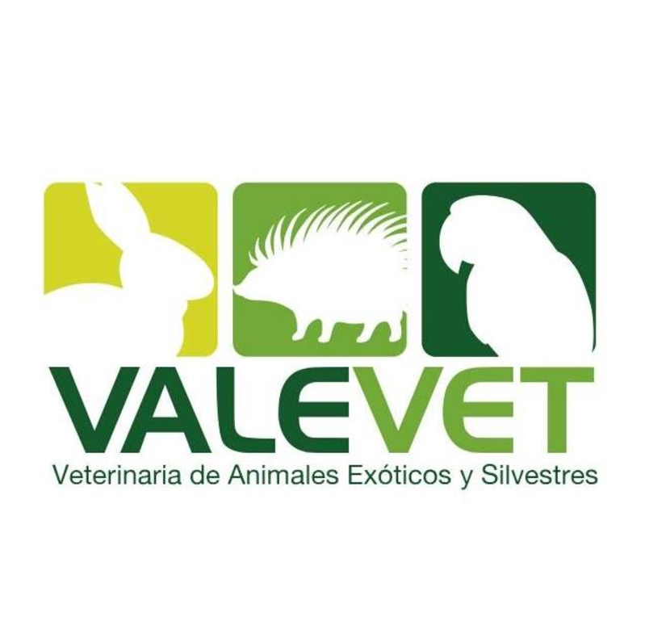

| |
Cuidados conejiles: veterinario |
| |
Cuidados conejiles: veterinario |
Importancia del veterinarioLas visitas regulares al veterinario son cruciales para el bienestar de los conejos, ya que permiten la detección temprana de problemas de salud comunes como problemas dentales, enfermedades digestivas y parásitos. Además, los chequeos periódicos aseguran que el conejo esté recibiendo una dieta adecuada y el manejo necesario para prevenir la obesidad y otras afecciones. Un veterinario especializado en animales exóticos puede proporcionar asesoramiento valioso sobre el cuidado diario, la socialización y los signos tempranos de enfermedad, ayudando a prolongar la vida y mejorar la calidad de vida de tu conejo. Veterinarias de animales exóticos especializados en conejos en Lima: |
|  | 
| |
Exotic Kingdom |
Valevet |
Italvett |
| Visita Exotic Kingdom, una nueva Clínica Veterinaria especialista en animales exóticos. Cuentan con atención 24/7, sala de cirugías y máquinas de rayos x. Ubicados en Miraflores. |
Veterinaria especialista en Animales Exóticos y Silvestres. Ubicada en Surquillo |
Clínica Veterinaria especializada en Animales Exóticos brindando servicios de medicina preventiva, controles sanitarios, exámenes de laboratorio y de ecografía, anestesia y procedimientos quirúrgicos. Ubicado en Sam Juan de Lurigancho |